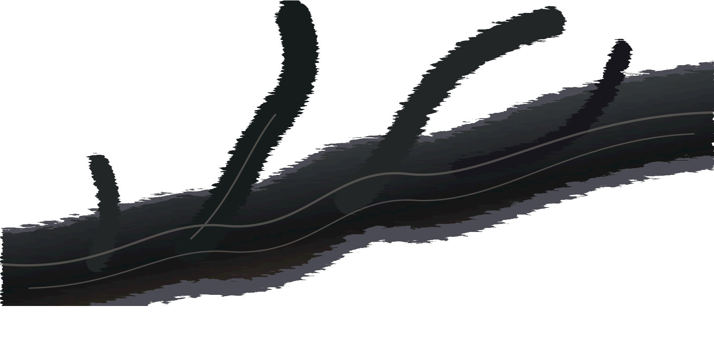

A study in concealed life
Layers holdtales of time.
Move across the branch. Beneath the dry surface, moss and tiny blossoms wait for light.


move to reveal the living layer
X 050
Y 050
Y 050
Move across the branch. Beneath the dry surface, moss and tiny blossoms wait for light.
